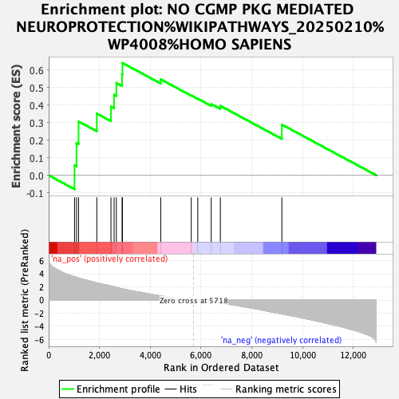
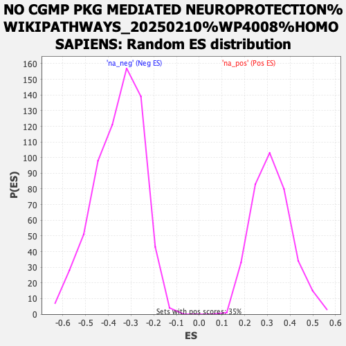

| | | Dataset | ranked_genes_2 |
| Phenotype | NoPhenotypeAvailable |
| Upregulated in class | na_pos |
| GeneSet | NO CGMP PKG MEDIATED NEUROPROTECTION%WIKIPATHWAYS_20250210%WP4008%HOMO SAPIENS |
| Enrichment Score (ES) | 0.6389533 |
| Normalized Enrichment Score (NES) | 2.0021186 |
| Nominal p-value | 0.0 |
| FDR q-value | 0.1043096 |
| FWER p-Value | 0.593 |
Table: GSEA Results Summary

Fig 1: Enrichment plot: NO CGMP PKG MEDIATED NEUROPROTECTION%WIKIPATHWAYS_20250210%WP4008%HOMO SAPIENS
Profile of the Running ES Score & Positions of GeneSet Members on the Rank Ordered List

Fig 2: NO CGMP PKG MEDIATED NEUROPROTECTION%WIKIPATHWAYS_20250210%WP4008%HOMO SAPIENS: Random ES distribution
Gene set null distribution of ES for NO CGMP PKG MEDIATED NEUROPROTECTION%WIKIPATHWAYS_20250210%WP4008%HOMO SAPIENS